You have probably heard somewhere that there is no right
way of writing music. Music is subjective after all, isn't it? Well actually, you
are stupid and dumb. Obviously some genres of music are better than others and it
all comes down to how well the composer knows their Music Theory.
The Right Way
First thing's first, you need to get yourself a medium.
No, not that kind of medium. A medium through which you can write music. Obviously the
correct answer here is FL Studio 20 because it is
the one I use.
The next thing you need to do is write some music. You will need an instrument.
Pick the one that I pick, because it's the only one you'll ever need. Go to your channel rack
and pull up Sytrus, then open up the preset "303ish". Go ahead and click-and-hold the note "C3". Did
you cringe? If so, you're on the right track. Now the key here is to put as many notes as possible
into the piano roll. Here is where you take some creative liberties. Go crazy, seriously. If you are
not in a mental hospital after releasing this song, you are too bland and boring. The key is subversion
of expectation. Here's what I came up with:
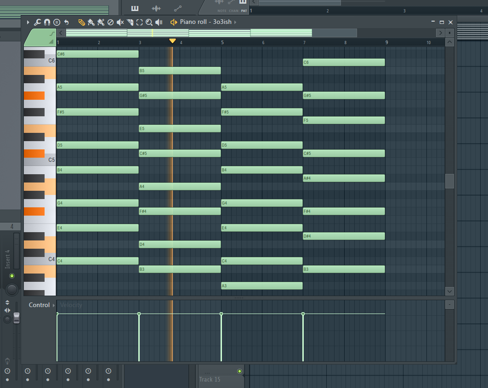
Final Thoughts
This was a brief introduction to real-world, advanced music theory. I hope you
learned something from this article and that you are grateful for my hard work. Please share
this with your fellow music theory enthusiasts (if you can still contact them from the mental
hostpital).
The primary building block of proper music are chords. Chords are just a bunch of notes
that all play at the same time. You can use them to generate Emotions.
Not all chords are created equal. For example, the most common chords are only three or four notes because they usually
sound pretty good on their own... if you're boring. Real chords are usually between 8-15 notes. Adding more is cool, but because of science,
the human brain stops recognizing what it's listening to as music.
What If I Want Less Notes?
That's okay, just don't think you'll be getting any respect from me or
anyone for that matter. And before you go off thinking you have any free
will, let me tell you that 4-note chords are so basic, there's pretty much
only 9 ways they can resolve. Here is the officially-recognized table of
4-note chord resolutions:
category
lawful
neutral
chaotic
good
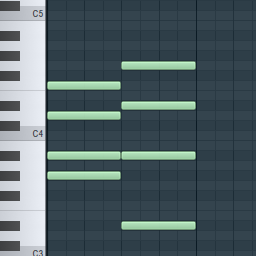
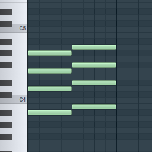
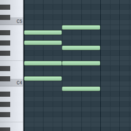
neutral
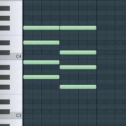
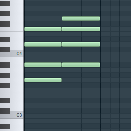
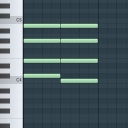
evil
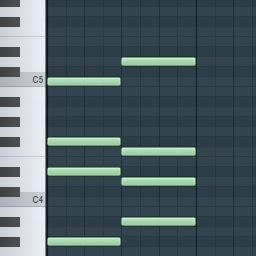
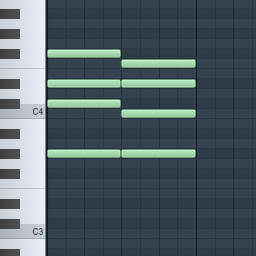
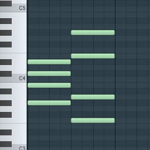
Your First Chord Progression
Open up Fl Studio and pull up something like a grand piano because it's basic.
Next, place your notes. We'll start with 8 notes per chord for now to keep things simple. Pick a root note (i.e.,
the bottom note of the chord) for all of your chords, then stack notes on top. Alternate between 2 and 3 spaces
between every note until you have reached 8 notes.
You should end up with something like this:
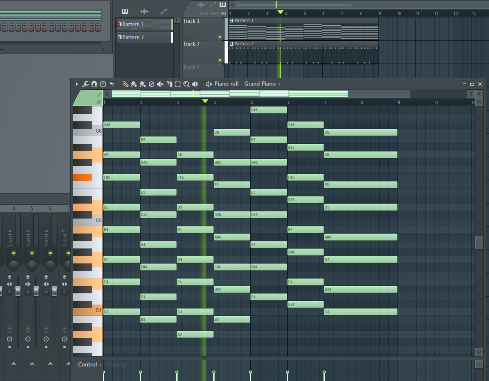
I would tell you the names of these chords, but traditional music theory is
so outdated even scales-chords.com
can't identify it.
Congratulations, because you just finished your first song! You can now publish it to your
favorite website.
Final Thoughts
In this article, I said I would show you how to make a chord progression, but you actually left
with a full song. Frankly, that's more than you were expecting and just goes to show how much I'm willing to
go above and beyond for you.